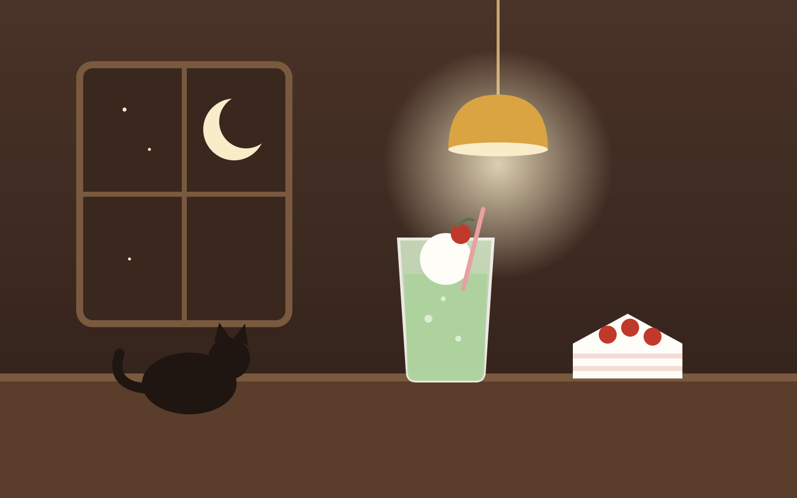

必點甜點
昭和草莓千層蛋糕
層次分明，鮮奶油輕盈不甜膩，搭配新鮮草莓。
Moonlight Cafe・中山區昭和復古深夜咖啡

層次分明，鮮奶油輕盈不甜膩，搭配新鮮草莓。
經典昭和喫茶店視覺，拍照超好看。
口感醇厚，帶有黑巧克力與堅果香氣。
隱身在中山赤峰街老宅二樓的昭和風格喫茶店，保留溫潤木質老傢俱與懷舊復古燈飾。店內有兩隻親人的店貓駐店，除了熱門的手作千層蛋糕，還提供傳統哈密瓜冰淇淋蘇打，是夜晚放鬆聚會的絕佳秘密基地。